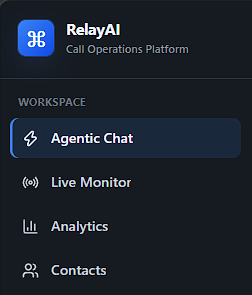
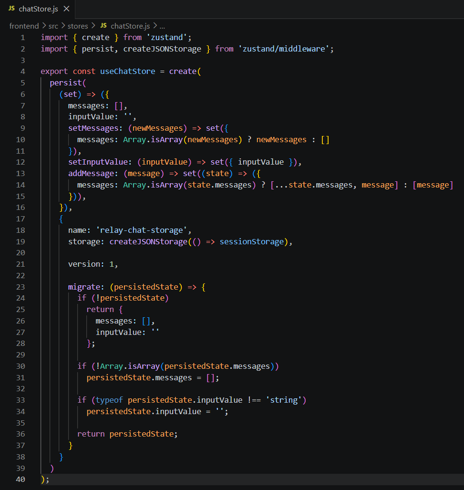
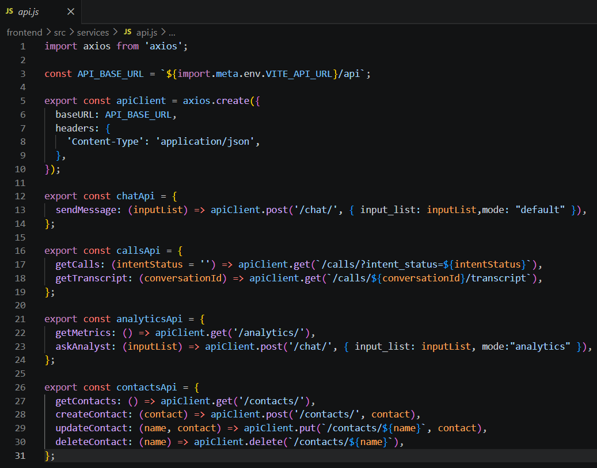

Day 28 - Relay AI: React Frontend Development
Training Company: Auribises Technologies
Trainer: Mr. Ishant Kumar
Session Overview
After completing the backend architecture, today's development focused on building the frontend of Relay AI using React. The objective was to replace the earlier Streamlit interface with a modern, responsive web application capable of interacting seamlessly with the FastAPI backend. During this session, reusable UI components were developed, application routing was implemented, global state management was introduced using Zustand, and the frontend was connected to backend APIs to create a complete full-stack experience.
Application Layout
The application's user interface was designed around a responsive layout consisting of a collapsible sidebar, a dynamic top navigation bar, and a content area that renders different modules using React Router. This structure provides smooth navigation while maintaining a consistent user experience across the entire application.

Routing and Navigation
React Router was configured to organize Relay AI into multiple functional modules including the Agentic Workspace, Live Monitor, Executive Analytics, and Contact Directory. Each section is rendered as an independent page while sharing the same overall application layout, making the project modular and easy to extend in future development.

State Management with Zustand
To efficiently manage application state, Zustand was introduced as the global state management library. Separate stores were created for chat conversations, analytics, contact management, and live monitoring. Persisting selected application data improved the user experience by maintaining important information across page navigation and browser refreshes.

API Integration
Axios-based service modules were implemented to communicate with the FastAPI backend. Instead of placing HTTP requests directly inside React components, dedicated API service files were created for chat, contacts, analytics, and live monitoring. This separation keeps the frontend clean while making backend communication reusable throughout the application.

User Interface Components
The interface was developed using reusable React components such as cards, buttons, status badges, metric panels, chat bubbles, loading placeholders, and animated containers. Creating reusable UI elements reduced duplicate code while maintaining a consistent design language across every page of Relay AI.
Class Activity
- Built the React application layout.
- Implemented routing using React Router.
- Developed reusable UI components.
- Integrated Zustand for global state management.
- Connected the frontend to FastAPI using Axios.
- Created a responsive dashboard interface for Relay AI.
Assignment
Continue integrating backend APIs into each frontend module and complete the remaining functionality of Relay AI.
Project Repository
Key Learning Outcomes
- Learned how to structure a scalable React application.
- Implemented navigation using React Router.
- Managed global application state using Zustand.
- Integrated FastAPI endpoints using Axios services.
- Built reusable UI components for a consistent interface.
- Strengthened understanding of frontend architecture for full-stack applications.
Personal Reflection
Developing the frontend of Relay AI provided valuable experience in modern React development. Instead of creating isolated pages, the application was designed around reusable components, centralized state management, and modular API integration. This approach significantly improved maintainability and demonstrated how professional frontend applications are organized in real-world software projects.
Next Session
The next session will focus on integrating the frontend and backend modules completely, implementing advanced AI-powered features, and refining Relay AI into a production-ready intelligent automation platform.